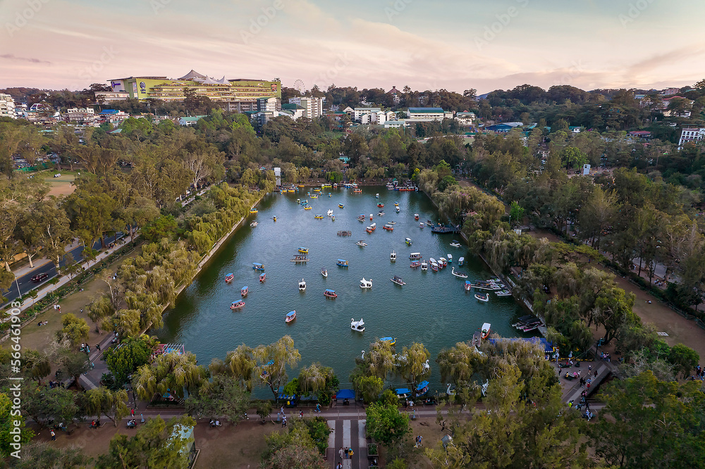
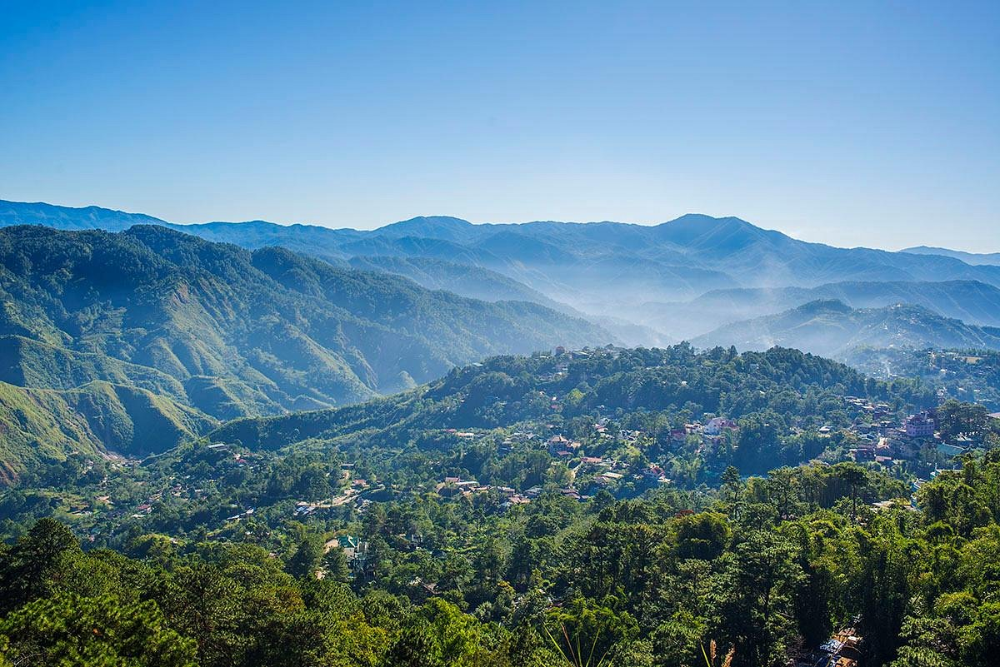

Thing to do in Baguio City
Explore Burnham Park.
This is Baguio's most famous park, and it's a great place to relax, have a picnic, or try some of the many activities available, like boating on Burnham Lake, biking, or riding a horse-drawn carriage.
Visit the BenCab Museum.
This museum houses the extensive collection of National Artist Benedicto Cabrera, also known as BenCab. The museum is a great place to see some of the best Filipino art, and it also has a beautiful garden.
Go strawberry picking at a La Trinidad strawberry farm.
La Trinidad Valley, just outside of Baguio, is famous for its strawberry farms. You can visit one of the farms to pick your own strawberries, or to buy fresh strawberries and other produce.
Take a hike in Camp John Hay

Camp John Hay is a former American military base that has been converted into a recreation area. There are a number of hiking trails in Camp John Hay, as well as a treetop adventure course and a zip line.
See the views from Mines View Park
Mines View Park is a popular lookout point that offers stunning views of the Benguet mountains. You can also see the zigzagging Kennon Road, a marvel of engineering.
Shop at Session Road
Session Road is Baguio's main shopping street, and it's a great place to find souvenirs, clothes, and other goods. You can also find some good eats here.
Try your luck at the Baguio Night Market

The Baguio Night Market is a lively market that takes place every night. Here you can find all sorts of things to buy, from souvenirs to food.
Learn about the indigenous cultures of the Cordillera region at the Museo ng Kordilyera
The Museo ng Kordilyera is a great place to learn about the history and culture of the Igorot people, who are the indigenous people of the Cordillera region.
Visit the Baguio Botanical Garden
The Baguio Botanical Garden is a beautiful garden that is home to a wide variety of plants and flowers. It's a great place to relax and enjoy the fresh air.
Sample the local cuisine
Baguio has a unique cuisine that is influenced by the Igorot people and other cultures. Some of the must-try dishes include strawberry taho, pinikpikan (chicken soup with grilled feet and beaks), and longganisa (sausage).